How SPlit works
This page walks through the ideas behind SPlit.jl in plain words, with analogies instead of formulas. If you already know the math and want the exact quantities and function names, go straight to Methods. If you want to see how the methods perform, see Benchmarks.
The problem with random splits
Imagine dividing a school class into two teams for a game, by drawing names out of a hat. Most of the time you get two reasonably balanced teams. But sometimes the hat gives you all the tall kids on one side, or all the fast runners, and the game is lopsided before it even starts. Nobody did anything wrong. The draw was fair, and you were unlucky.
A test set plays the same role for a machine learning model that the second team plays in that game. It is supposed to be a miniature version of the whole dataset, so that a good score on it tells you something true about how the model will do on new data. Random splitting gets this right only on average, over many hypothetical splits. Any single random split can still be unlucky: a few outliers, a rare category, or a cluster of similar rows can all land almost entirely on one side. When that happens, your test score is noisy, and you cannot tell whether a change in the score came from a better model or from a luckier split.
SPlit takes a different approach. Instead of drawing names out of a hat, it looks at the whole class first and deliberately picks a team so that both teams resemble the class as a whole, tall kids, fast runners, and everyone else, in proportion. The rest of this page explains how it does that.
The whole procedure at a glance
Every splitter in this package has the same shape. The rows are first preprocessed so that every column counts equally. Then n of them (the number of rows selected, the smaller side) are chosen to stand in for all N rows (the total number of rows). The chosen rows become one side of the split, and everything left over becomes the other side.
Only the middle step differs, and there are four ways to do it. SupportPointSplitter places ideal locations first and then lets each one claim a real row. HerdingSplitter picks rows one at a time, each pick chosen to fix the current mismatch. TwinningSplitter covers the data with small neighborhoods and takes one row from each. KernelThinningSplitter halves the rows again and again, then keeps the best half.
Read the figure from left to right. The rows enter on the left and pass through preprocessing. They then take one of the four lanes inside the highlighted box, and all four lanes end in the same two-sided split. No lane is marked as the right one, because which lane suits your data is a question for Benchmarks.
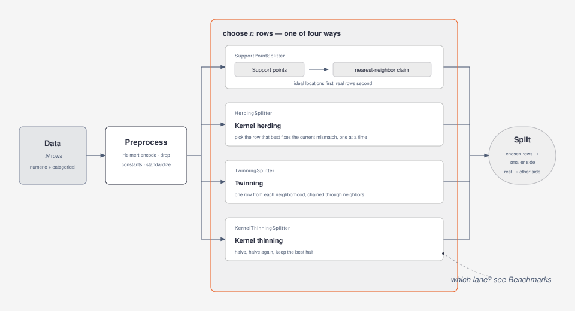
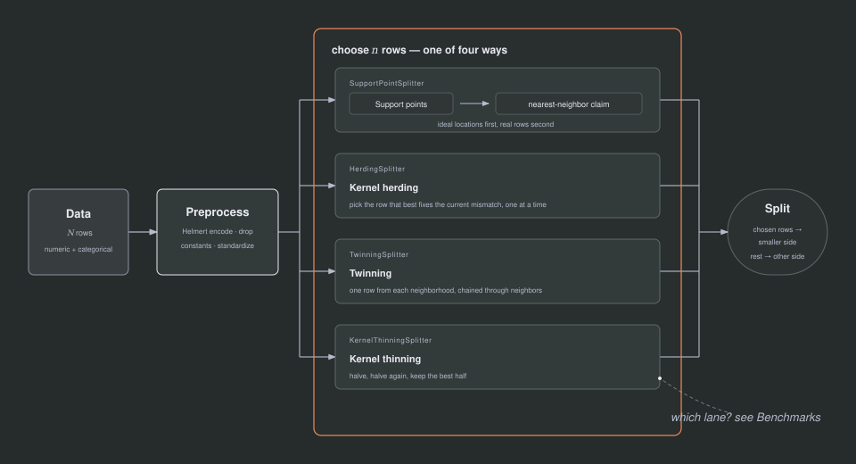
Measuring "looks like": the energy distance
Before you can choose a split that "looks like" the whole data, you need a way to measure how much two groups resemble each other. SPlit measures this with the energy distance.
Picture two groups of people standing in a room, group A on the left, group B on the right. You want to know whether they were drawn from the same crowd, or whether they are actually different populations sitting in different corners. Measure the average distance between a randomly chosen person from A and a randomly chosen person from B (call this the cross-distance), and separately measure the average distance between two random people picked from within A, and within B (call these the within-distances).
If A and B are two random samples from the same crowd, a person from A is, on average, about as far from a person in B as two people from the same group are from each other. Cross-distance and within-distances come out close, and the score is near zero. If instead A and B really are different, say A is mostly children and B is mostly adults, people across the groups tend to be farther apart than people within a group, so the cross-distance grows and the score grows with it. In words, the energy distance is twice the cross-distance minus the two within-distances; it is zero only when the two groups come from the same distribution, and grows as they drift apart. Lower is always better.
The figure below shows the two situations. Grey circles are rows of group A, blue squares rows of group B. In each panel one orange line measures a cross-distance (an A row to a B row) and two dashed lines measure a within-distance (two A rows, two B rows). On the left the groups are mixed and the three lines are about equally long, so the score is near zero. On the right the groups sit in different corners, the orange line is much longer than the dashed ones, and the score is large.
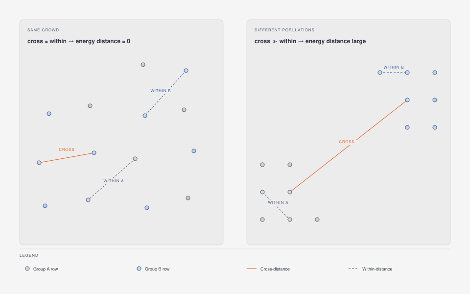
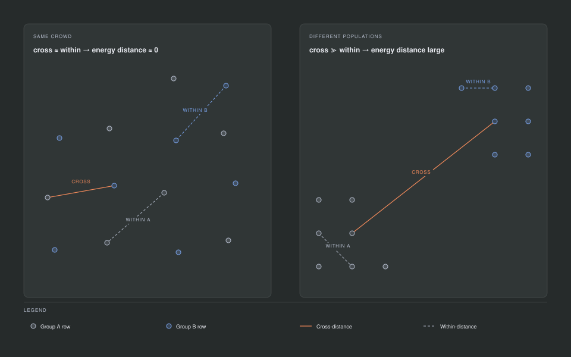
This quantity is implemented by energydistance, and splitquality(data, result) computes it between the resulting train and test rows, after the same preprocessing datasplit used internally. When you see "energy distance" or "discrepancy" elsewhere on this page or in the package, this is the number being discussed.
Preprocessing, in one paragraph
Before any distance is measured, the data is put on equal footing. Categorical columns are turned into numbers by Helmert encoding, in a fixed, canonical order of the categories' levels, so the result does not depend on the order the rows happened to arrive in. Columns that never change (constant columns) are dropped, since they carry no information about how rows differ. Every remaining column is then standardized to mean 0 and variance 1, so that a column measured in dollars does not dominate a column measured in years only because its numbers happen to be bigger.
Four ways to choose the rows
The four splitters below all chase the same goal: n rows whose energy distance to the whole data is as small as possible. What separates them is how they search for those rows, and what that search costs. Each one gets an analogy, a picture, and a note on when to reach for it.
Support points: choose ideal locations first, rows later
Rather than pick data rows directly, SupportPointSplitter first asks a more abstract question: if I could place n points anywhere I like, not restricted to existing rows, where should they go so that their energy distance to the full data is as small as possible? The answer to that question is a set of support points (Mak & Joseph, 2018).
Think of placing n ice-cream trucks in a city so that they serve the whole population well. Each truck is pulled toward where people live (attraction to the data). But if every truck parked on the single busiest block, the rest of the city would be poorly served, and the trucks would all look almost identical to each other, so each truck is also pushed away from where the other trucks already are (repulsion between the points). Minimizing the energy distance between the trucks and the population is exactly the mathematical version of balancing that pull and that push: enough attraction to sit where the data is dense, enough repulsion to still spread out and cover where the data is sparse.
The figure shows this balance for one support point, the orange circle, sitting a little too close to a neighboring support point at the edge of a dense cluster. The thin hairlines show which rows pull on it. The solid arrow is the attraction toward those rows, and the dashed arrow is the repulsion straight away from the crowded neighbor. The orange arrow is the sum of the two, the diagonal of the faint parallelogram, and the dashed orange circle is where the point sits next: away from the neighbor, but still toward the data. The remaining hollow circle is a support point that already sits well and is left alone here.
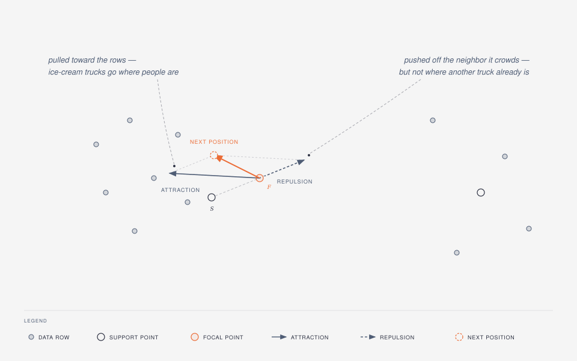
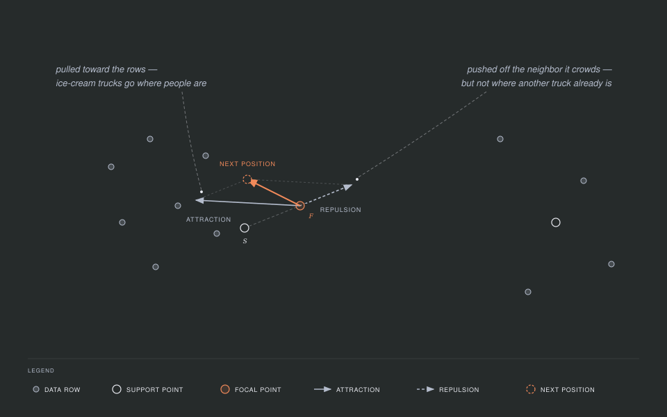
n is the size of the smaller side of the split. With ratio = 0.2 on 1,000 rows, n is 200; those 200 points are what the optimizer places.
Reach for support points when you want the procedure of Joseph & Vakayil (2022) as published, and when the data is large enough that kappa (the size of the per-iteration random subsample, explained below) can buy you speed:
using SPlit, Random
data = randn(MersenneTwister(1), 1_000, 3)
support = SupportPointSplitter(ratio = 0.2, rng = MersenneTwister(2))
result = datasplit(support, data)How the optimizer moves the points
The points do not appear in their final positions instantly. They start somewhere and are moved sweep by sweep by an algorithm called majorization-minimization (MM). At each sweep, every point moves to a weighted average of two things: the data rows, which pull it (nearby rows pull harder than far ones, because the pull weight is one over distance), and the other support points, which push it away, so points do not collapse onto each other. Every sweep makes the energy distance smaller or, at worst, leaves it the same, and the descent test in this package checks exactly that guarantee. Points are clamped to stay inside the bounding box of the data, so the optimizer never wanders off to a location no data row is near. The sweeps stop either when the largest squared move of any point in one sweep drops below tolerance, or after max_iterations sweeps, whichever comes first.
The figure takes one sweep apart for a single point, the orange one. The first panel is the data pull: each line joins the point to a data row, the near rows are drawn thick because they pull hardest, and the × marks the weighted average of the rows. The second panel is the repulsion: every other support point pushes with an arrow of the same length, pointing straight away from it. The third panel adds the two together, and the orange arrow is the move that comes out. The dashed circle is where the point lands, and the dashed rectangle is the bounding box it is clamped into.
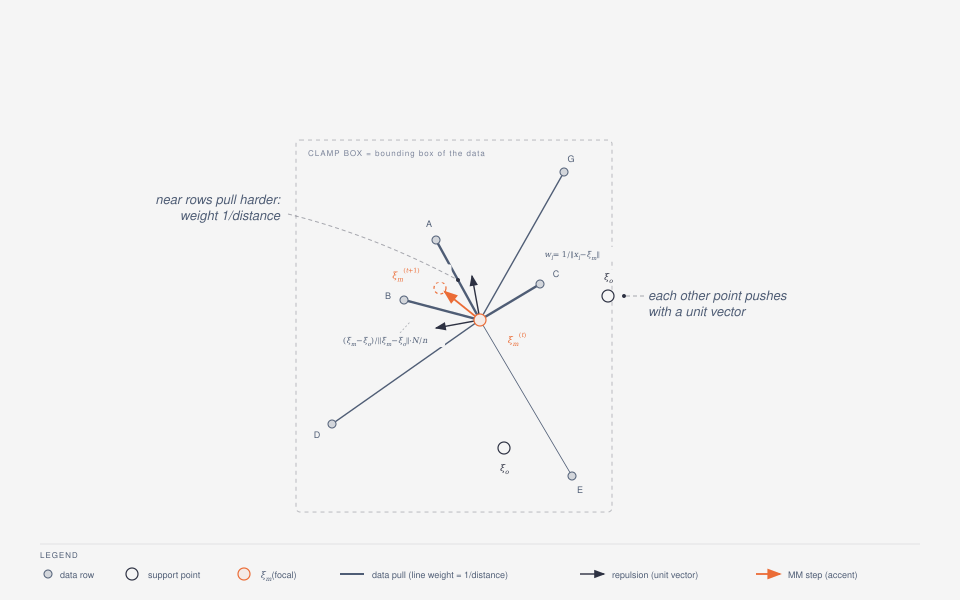
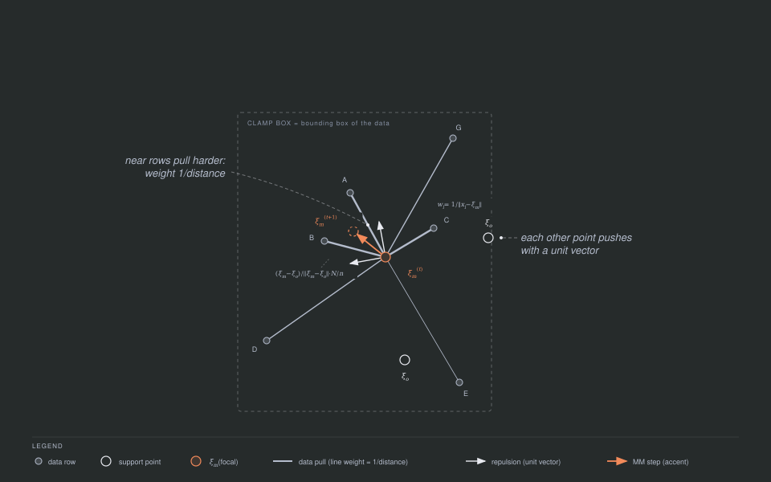
That full-data sweep looks at every row of the data every time, which gets slow once there are millions of rows. For large data, kappa switches on a stochastic variant (Joseph & Vakayil, 2022): instead of looking at every row, each sweep looks at a fresh random sample of kappa rows (an absolute row count, not a fraction of the data), and blends the new position with a running average of the previous positions so that the noise from sampling different rows each time averages itself out over many sweeps. The price of this speed-up is that the strict never-worse guarantee no longer holds sweep by sweep, since each sweep only sees part of the data. Stochastic mode only switches on when kappa is smaller than the number of rows in the data; otherwise the full, monotone sweep is used.
From points to rows: nearest-neighbor assignment
Support points are ideal locations, not rows that exist in your data. The next step turns them into an actual subset. Each support point, taken in turn, claims the nearest data row that no earlier point has already claimed, much like a game of musical chairs where each player in turn sits in the nearest empty chair. This search is served by a k-d tree, so it stays fast even with many rows and many points.
The figure follows three turns of that game. Hollow circles are support points, numbered in the order they pick, grey circles are rows nobody has claimed, and filled circles are rows that have been claimed. In the first two turns, points 1 and 2 simply take their nearest row. In the third turn the orange point finds its nearest row already taken, shown by the dashed line, so it claims the next nearest row instead.
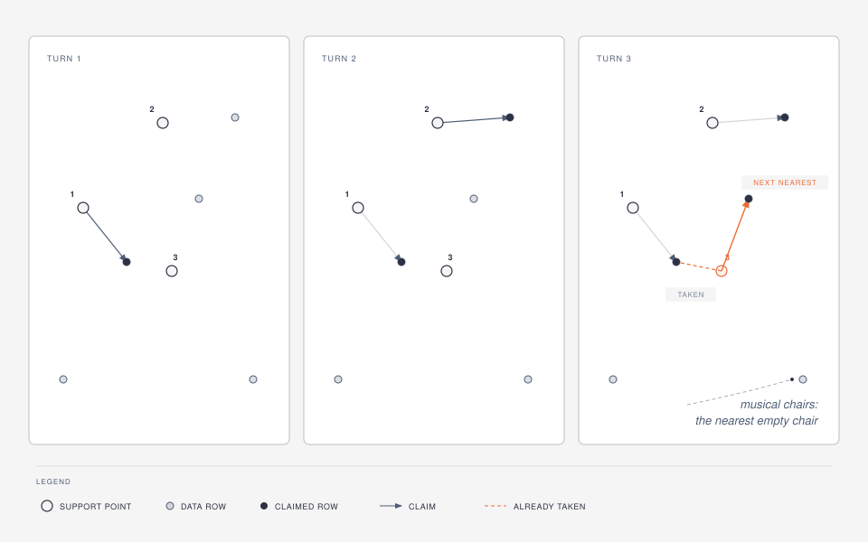
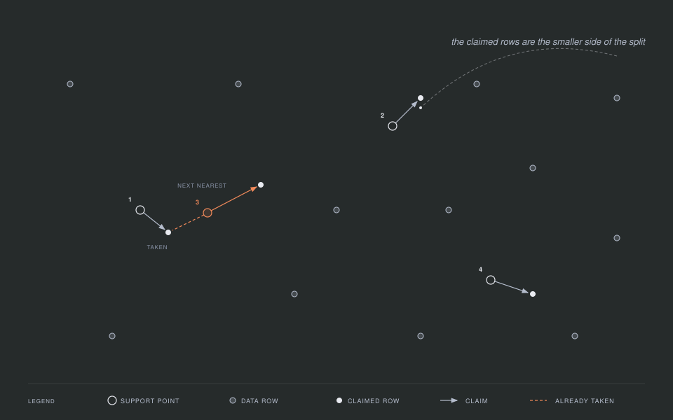
The set of claimed rows is the smaller of the two subsets. If ratio <= 0.5, that smaller subset becomes the test set and the rest becomes the training set; otherwise it is the other way around, the claimed rows become the training set and the rest become the test set.
The result gives you a few equivalent ways to get at the two subsets:
train, test = result
train = data[result, :train]
test = data[result, :test]
train_indices(result)
test_indices(result)Kernel herding: pick the rows one at a time
HerdingSplitter takes a different route to the same goal. Rather than first placing abstract support points and then matching them to rows, it picks data rows directly, one at a time, by kernel herding (Chen, Welling & Smola, 2010). Each pick is the unselected row that best improves the match between "the rows picked so far" and the whole data.
This is like assembling a sports team one player at a time: rather than draft the objectively best player each round, at every step you pick whoever best balances the team you have already assembled, so the finished roster as a whole represents the full pool of talent.
In the figure, three rows have already been picked, and all three sit in the left cluster. The right cluster is shaded, because nothing has been picked there yet, so the rows picked so far describe it badly. The orange ring marks the next pick: the row that most reduces that mismatch, which is a row from the right cluster.
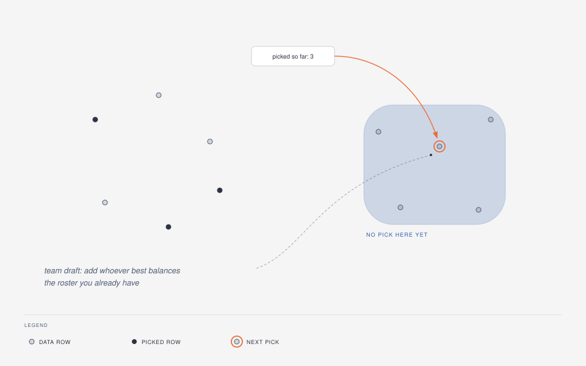
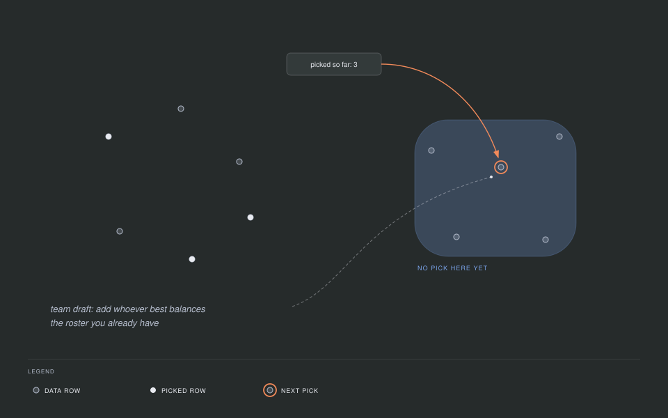
herding = HerdingSplitter(kernel = GaussianKernel(), rng = MersenneTwister(6))
result = datasplit(herding, data)
result.iterations # number of rows selectedHerdingSplitter is deterministic given the data and a numeric kernel; the rng only comes into play to resolve a :median bandwidth. Its comparison to the whole data is always computed exactly, at a cost that grows with the square of the number of rows, and result.iterations counts the number of rows it has selected. Prefer it when you want a split that is fully determined by the data and the kernel, with no random initialization and no optimizer to tune; see Benchmarks for how it compares against support points in practice.
Twinning: one row from every neighborhood
TwinningSplitter (Vakayil & Joseph, 2022) does no optimization at all. It covers the data with n small neighborhoods and takes exactly one row from each, so every row it leaves behind has a chosen row close by.
Think of surveying a town by walking it block by block. You start at the house farthest from the town center and interview one household there, then mark that house and its immediate neighbors as done. Next you walk from the far edge of that little block to the nearest house you have not visited yet, and repeat. You end up covering the whole town evenly, one household per block, without ever needing a map of the whole place at once.
The algorithm is that walk. The first start row is the row farthest from the centroid of the standardized data, which is what start = :farthest, the default, means. Each group is its start row together with its r - 1 nearest rows that no group has taken yet, where r is N ÷ n. The next start row is the ungrouped row nearest the farthest member of the group just formed. The selection is the start rows, one per group, and the objective being served is still the energy distance.
In the figure the small × marks the center of the data. The first start row is the one farthest from it, ringed in orange. It takes its two nearest ungrouped rows, and the dashed outline around the three is the first neighborhood. An arrow leaves the farthest member of that neighborhood and lands on the nearest ungrouped row, which starts the next one. Filled circles are the selected rows, one from each neighborhood.
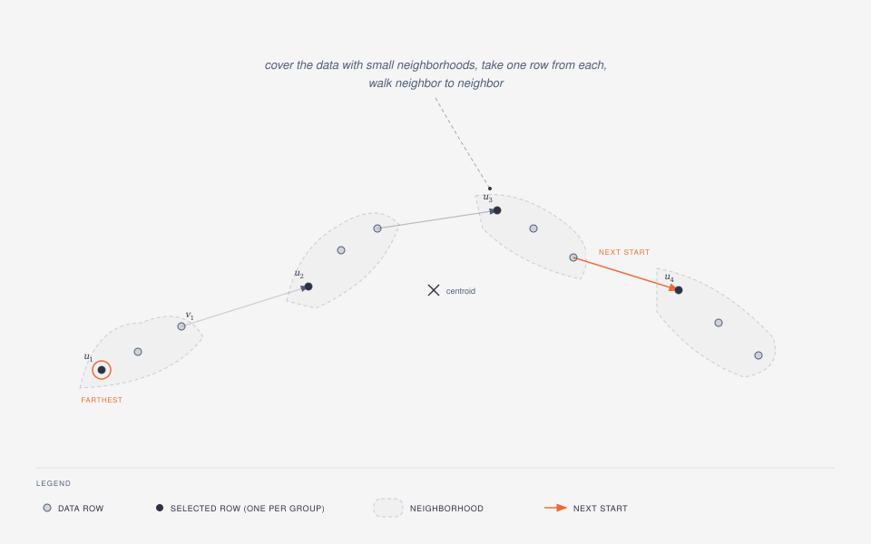
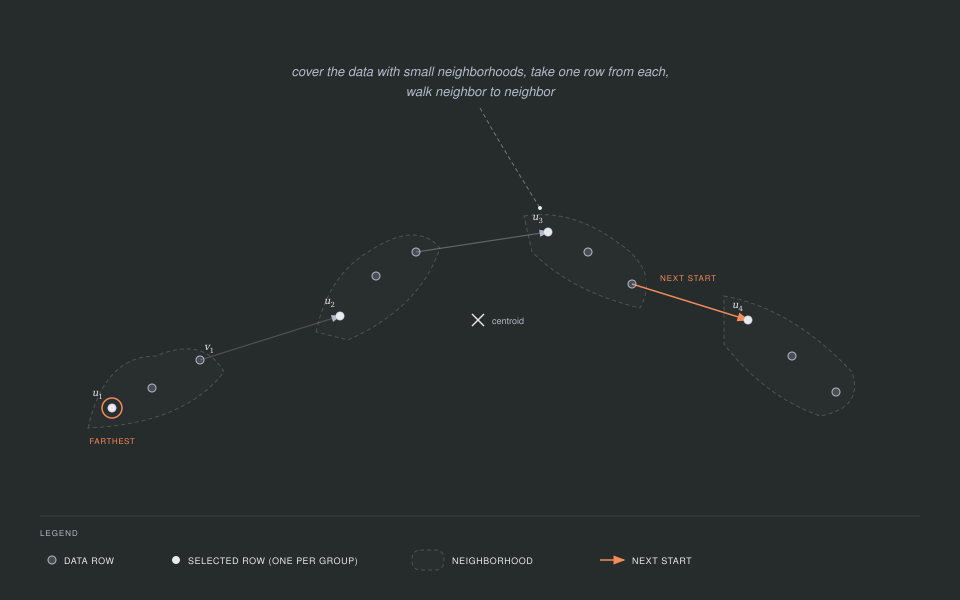
twin = TwinningSplitter(rng = MersenneTwister(9))
result = datasplit(twin, data)
folds = multiplet(twin, data, 5)With the default start = :farthest the walk consumes no randomness, so the result is fixed by the data alone and the rng above matters only for start = :random. Twinning has no kernel to choose and no optimizer to tune, which makes it the fastest of the four once the data is large. In exchange it is the least flexible: weights and reference, both described below, are not defined for it and raise an ArgumentError. It is also the only splitter that can run multiplet(twin, data, k; strategy = :single); the other two strategies, :sequential and :halving, work with any splitter.
Kernel thinning: halve, halve again, keep the best half
KernelThinningSplitter (Dwivedi & Mackey, 2022, 2024) reaches the subset by repeated halving rather than by a greedy walk, and it carries a guarantee about how good the result is.
Picture dealing a shuffled deck into two piles. You take the cards two at a time and put one in each pile, but you do not always deal them in the order they arrived: whenever the two piles start to drift apart, you flip which card goes where, so the piles stay balanced as you go. At the end either pile is a fair miniature of the whole deck, and you halved the deck in a single pass.
Kernel thinning deals the rows exactly that way, and then repeats the halving. Rows are visited in pairs, in a random order, one row of each pair going to each pile, and the assignment is flipped with a probability that keeps the piles balanced. Halving the rows log2(N / n) times, rounded down, turns the front of the shuffle into several candidate subsets of size n. A plain uniform random subset joins them as a baseline, every candidate is compared against the whole data, and the winner is improved by one swap pass that trades a chosen row for an outside row wherever that helps. Because the random baseline is one of the candidates, the outcome is never worse than a random subset.
Read the figure from left to right. Sixteen rows are halved into two piles of eight, each pile is halved again, and the four subsets of four rows are the candidates. The dashed box below them is the random baseline that joins the comparison. The best of the five goes through the swap pass, drawn as one row leaving and one row entering, and what comes out is the selection. The inset shows a single halving step: a pair of rows, one going to each pile, and the flip that keeps the piles from drifting apart.
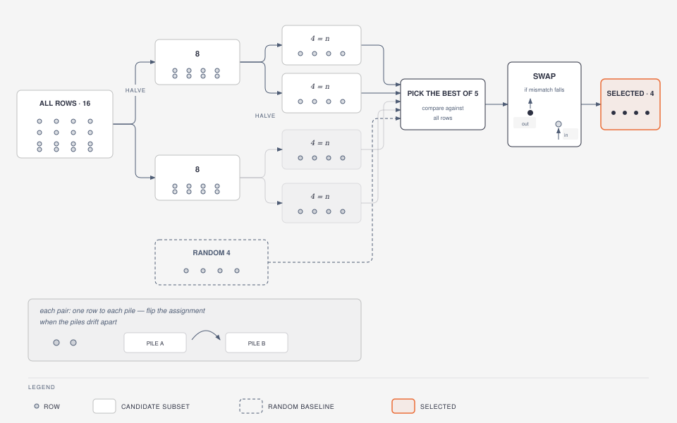
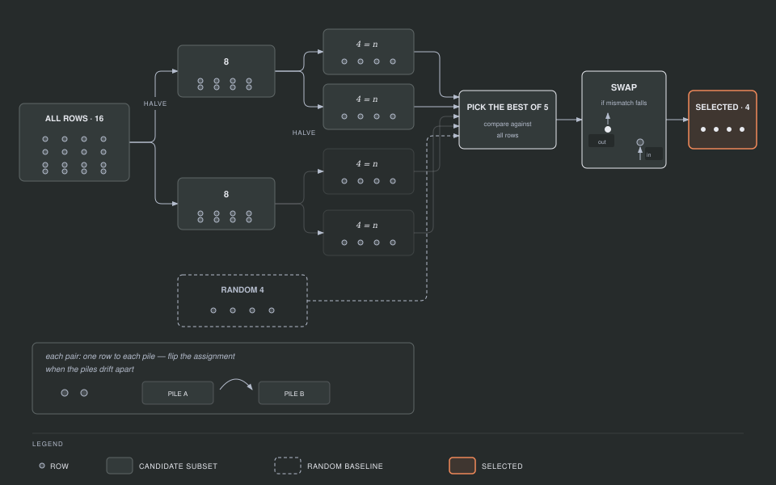
thinning = KernelThinningSplitter(rng = MersenneTwister(10))
result = datasplit(thinning, data)
result.iterations # number of swap replacementsThe guarantee, in words: each halved candidate stays close to the rows that entered the halving, measured by the maximum mean discrepancy (MMD) of the next section, and it does so with high probability. delta is the failure probability of that guarantee, 0.5 by default, the value the papers use in their experiments. The cost grows with the square of the number of rows, the same class as kernel herding, so reach for kernel thinning when you want the guarantee and your data fits that budget. When n is a tiny fraction of N there is a near-linear variant, Compress++ (Shetty, Dwivedi & Mackey, 2022), which compress = :auto turns on for you. It is defined only for the data's own distribution, so it never fires with weights or reference, and it does not fire at the default 20% ratio either.
How much to hold out: the optimal ratio
Choosing a split ratio is itself a trade-off. A model with more parameters needs more training rows to be estimated well, which argues for a small test set. But a test set that is too small gives you a noisy performance number, since it is averaging over very few rows. Joseph (2022) works out where the balance point sits: for a linear model with p parameters, including the intercept, the test fraction that minimizes the variance of the fitted model is one divided by the square root of p plus one, written as γ = 1/(√p + 1).
A few values make the shape of that curve concrete:
p (parameters, intercept included) | optimal test fraction |
|---|---|
| 2 | 0.41 |
| 5 | 0.31 |
| 10 | 0.24 |
| 26 | 0.16 |
| 101 | 0.09 |
Plotted as a curve, the same formula drops steeply for the first few parameters and then flattens: past a few dozen parameters the optimal test fraction changes very little. The dots mark the five rows of the table, and the dashed line is the default ratio = 0.2, which the curve crosses at about 16 parameters.
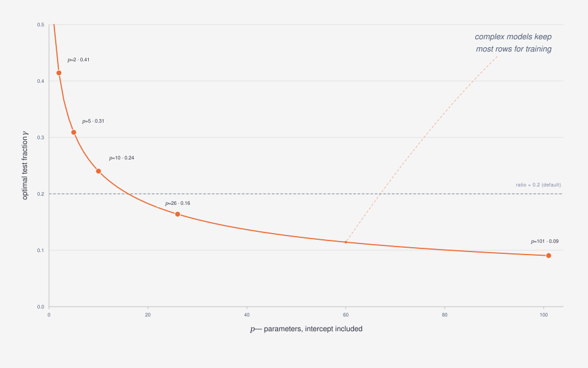
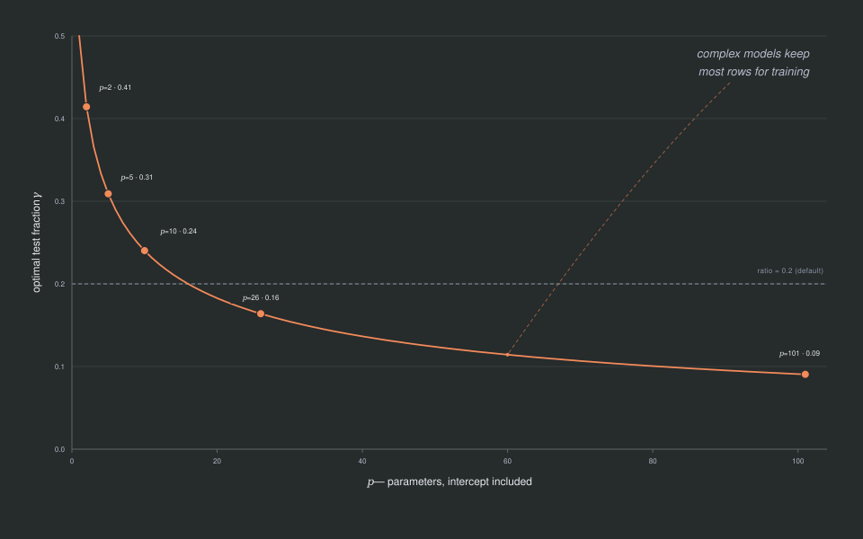
Simple models, with few parameters, can afford to give up a large share of the data for testing. Complex models, with many parameters, need to keep most of the data for training, and the formula's test fraction shrinks accordingly.
optimal_split_ratio(x, y) computes this for you, counting p as the number of encoded predictor columns of x (after the same preprocessing described above) plus one for the intercept:
x = randn(MersenneTwister(3), 500, 4)
y = randn(MersenneTwister(4), 500)
optimal_split_ratio(x, y)Only method = :simple is implemented. The paper also describes a method = :regression strategy for when the model is unknown, which SPlit.jl does not implement yet; calling it raises an error on purpose rather than silently falling back to :simple.
A different ruler: the Gaussian kernel and MMD
The energy distance measures how far apart two points are with a plain straight-line ruler. GaussianKernel(σ) swaps that ruler for a similarity score instead of a distance: it is 1 when two points are identical, and fades smoothly toward 0 as the points move apart, with σ controlling how quickly the similarity fades. The matching notion of "looks like" under this similarity is called the squared maximum mean discrepancy, MMD², and mmd computes it. In fact the energy distance is a special case of MMD²: it is what you get when the kernel is "minus the distance" between two points, so EnergyKernel and GaussianKernel are two members of the same family that differ only in the ruler.
The MM update described above is derived specifically for the energy distance, so it does not carry over to the Gaussian kernel unchanged. The Gaussian kernel has its own MM sweep instead (a mean-shift data term and a majorized repulsion term; see the Methods page), which kappa mode uses. On full data, the optimizer uses projected gradient descent with backtracking: take a step downhill, and if that step did not actually decrease the objective, shrink it and try again. This also produces a sequence of accepted steps that never makes the objective worse.
gauss = SupportPointSplitter(kernel = GaussianKernel(), rng = MersenneTwister(5))
result = datasplit(gauss, data)
result.method.kernel # resolved bandwidth
splitquality(data, result; kernel = result.method.kernel)bandwidth = :median, the default, picks σ as the median pairwise distance between the standardized rows, resolved once when datasplit runs, and the resolved kernel (with a plain number in place of :median) is stored in result.method.kernel, as shown above. Two things to watch for. :median raises an ArgumentError when at least half of all row pairs coincide exactly, which happens for example with a single binary categorical column. In that case pass a numeric σ instead, chosen on the scale of the standardized data: a bandwidth far below the spacing between rows makes the objective flat, and the optimizer never moves away from its starting sample. kappa, the stochastic large-data mode described above, is available for GaussianKernel too: it runs the Gaussian kernel's own MM sweep on subsamples, while full data keeps projected gradient descent.
Big datasets: estimators
Both the exact energy distance and the exact MMD compare every row against every other row, so their cost grows with the square of the row count. Once a dataset is large, that quadratic cost becomes the bottleneck, so the estimator keyword on energydistance, mmd, and splitquality lets you trade a small amount of exactness for a large amount of speed:
Subsample(m, repeats)measures the exact discrepancy on random subsets ofmrows and averages the result over several repeats. It is fast, but the estimate is biased upward by an amount of order1/m, so treat it as a way to compare two splits against each other, not as an absolute number on its own.RandomSlices(k)projects every row ontokrandom directions, like shining a light on the cloud of points from several angles and looking at the shadow it casts on a line, and computes the exact one-dimensional energy distance along each direction. It is unbiased, and only defined for the energy kernel.RandomFeatures(D)approximates the Gaussian similarity withDrandom cosine features (Rahimi & Recht, 2007), turning the comparison into a difference between two averages of those features. It is unbiased, and only defined for the Gaussian kernel.
energydistance(data[1:500, :], data[501:1000, :]; estimator = RandomSlices(64))
mmd(data[1:500, :], data[501:1000, :], GaussianKernel(1.0); estimator = RandomFeatures(512))splitquality chooses among these for you: it uses Exact() automatically whenever the train and test rows together number at most 20,000, and above that count switches to a fallback estimator chosen by the Estimator selection experiment on the Design experiments page.
Kernel herding intentionally has no estimator mode. When the greedy pick at each step used an approximate comparison instead of the exact one, the measured result was worse than a plain random split, so its data term stays exact; see Approximate herding data terms (rejected) on the Design experiments page for the measurement.
Beyond one train/test split
The same machinery answers three more questions, and each answer is a keyword rather than a different splitter.
Some rows deserve to count more than others. weights gives every row a non-negative number and asks for a subset that represents that weighted picture of the data instead of the plain one. Weights proportional to duplication counts behave exactly like duplicating those rows. The subset that comes back is always plain, with every chosen row counting once.
Sometimes the distribution you want to match is not the data you are choosing from. selectrows(splitter, data, n; reference = other) picks n rows of data so that they resemble other, which is how you assemble a sample that mirrors a target population you already have. The preprocessing is fit on the reference, so both tables are measured on the reference's scale, and the candidates are always rows of data. Since weights and reference name two different targets, you may pass one or the other but not both.
For cross-validation, one split is not enough. multiplet(splitter, data, k) returns k folds that together partition the rows, with sizes differing by at most one, and each fold resembles the whole data rather than merely being random. Every splitter can produce them.
Finally, standardize = false turns preprocessing off entirely, including the constant-column removal, and uses a numeric matrix exactly as it is. That is the mode for embeddings, whose geometry per-column standardization would distort; the LLM data-selection guide walks through that workflow.
Comparing splitters
When you are not sure which splitter or kernel suits your data best, compare runs several configurations on the same data and scores each one:
comparison = compare(
[SupportPointSplitter(rng = MersenneTwister(7)), HerdingSplitter(rng = MersenneTwister(8))],
data,
)
comparison # prints as a table: method, kernel, ratio, sizes, score
method, result = best(comparison) # the lowest-discrepancy pairCheat sheet
| Concept | Where it lives |
|---|---|
| Energy distance | energydistance, splitquality |
| Support points and MM optimization | SupportPointSplitter(kernel = EnergyKernel()) |
| Large-data stochastic mode | kappa |
| Gaussian kernel and MMD | GaussianKernel, mmd |
| Kernel herding | HerdingSplitter |
| Twinning | TwinningSplitter |
| Kernel thinning and Compress++ | KernelThinningSplitter, compress |
| Row assignment from points | inside datasplit (nearest-neighbor claim) |
| Optimal split ratio | optimal_split_ratio |
| Speeding up large data | estimator (Subsample, RandomSlices, RandomFeatures) |
| Rows that count more | weights |
| Matching another table | reference, selectrows |
| Folds that each look like the whole | multiplet |
| Embeddings, no preprocessing | standardize = false |
Where to go next
The Methods page states the same ideas as formulas, with the exact function that implements each one; read it once the shapes above feel familiar and you want the precise definitions. The Benchmarks page shows how the splitters compare against each other, and the Design experiments page carries the estimator measurements mentioned above. The Reference section carries the full docstrings for every exported name.
References
- Chen, Y., Welling, M., & Smola, A. (2010). Super-Samples from Kernel Herding. UAI, 109-116.
- Dwivedi, R., & Mackey, L. (2022). Generalized Kernel Thinning. ICLR.
- Dwivedi, R., & Mackey, L. (2024). Kernel Thinning. Journal of Machine Learning Research, 25(152), 1-77.
- Gretton, A., Borgwardt, K. M., Rasch, M. J., Schölkopf, B., & Smola, A. (2012). A Kernel Two-Sample Test. Journal of Machine Learning Research, 13, 723-773.
- Joseph, V. R. (2022). Optimal Ratio for Data Splitting. Statistical Analysis and Data Mining: The ASA Data Science Journal, 15(4), 531-538.
- Joseph, V. R., & Vakayil, A. (2022). SPlit: An Optimal Method for Data Splitting. Technometrics, 64(2), 166-176.
- Mak, S., & Joseph, V. R. (2018). Support points. The Annals of Statistics, 46(6A), 2562-2592.
- Rahimi, A., & Recht, B. (2007). Random Features for Large-Scale Kernel Machines. NIPS, 20.
- Shetty, A., Dwivedi, R., & Mackey, L. (2022). Distribution Compression in Near-Linear Time. ICLR.
- Székely, G. J., & Rizzo, M. L. (2013). Energy statistics: A class of statistics based on distances. Journal of Statistical Planning and Inference, 143(8), 1249-1272.
- Vakayil, A., & Joseph, V. R. (2022). Data Twinning. Statistical Analysis and Data Mining, 15(5), 598-610.